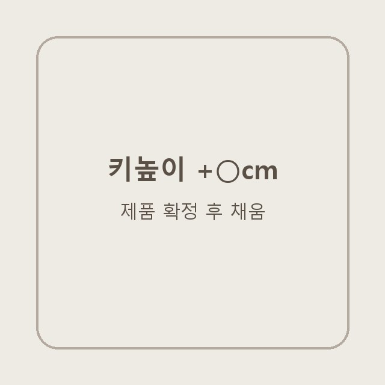

기본 훅 영상 (전편)
- 훅문 앞 로우앵글 와이드 데님 밑단 + 신발, "티 안 나게 +7cm" → 한 발 내딛기
- 중간신발을 손에 들고 소개 → 같은 구도로 신은 모습 → 제품 캡처
- 마지막첫 장면 구도로 돌아와 "키가 고민이시라면 구경 가보세요!"
CHAAKAN × MAERILLY · HEEL-UP GUIDE
착한구두 촬영 가이드 — 로우앵글 밑단 + POV 자막
이번엔 착한구두 키높이 라인이에요. 제품·색·사이즈는 확정되는 대로 이 칸을 채워 드려요. 구도와 훅은 지금 정해 둔 그대로 가요.
매릴리님 바지 핏은 그대로 두고 신발만 키높이로 바꿔요. 밑단 아래로 신발이 보이는 순간이 이 영상의 주인공이에요.

1번세 가지 다 첫 화면에 바지 밑단과 신발이 같이 보이고, 위에 자막 한 줄이에요. 얼굴·인사로 시작하지 않아요. 추천 1순위는 ①이고, ②는 지난번 착한구두 영상에서 해 보신 오프닝, ③은 더 세게 가고 싶을 때 고르는 선택안이에요.
첫 번째 영상이 바로 이 구도예요. 카메라를 문 앞 바닥 가까이 두고 무릎 아래만 잡아요. 와이드 데님 밑단 아래로 키높이 신은 발을 한 걸음 앞으로 내딛는 게 첫 장면. 자막은 매릴리님이 늘 쓰시는 POV 스타일(흰 글씨 + 검은 박스, 화면 위쪽)로 얹어요.
이 구도엔 → 자막 후보 — "POV: 바지 기장 안 줄였는데 밑단이 안 끌림" / "POV: 163인데 165 같다는 소리 들음" / "POV: 신발 하나 바꿨는데 다리 길어 보인다는 소리 들음" / "진짜 내 와이드 데님 구원템 소개함"
착한구두 샌들편에서 하셨던 첫 장면이에요. 한쪽만 키높이를 신고, 맨발 쪽은 앞꿈치를 들어 높이를 맞춰요. 샌들 → 키높이로 신발만 바뀌고 구도는 똑같아요. 옆 영상처럼 좌우 비교 + cm 숫자를 붙이면 더 빨리 읽혀요.
이 구도엔 → 자막 후보 — "POV: 한쪽만 신었는데 다리 길이가 달라짐" / "키작녀를 위한 +○cm 키높이 추천"
②를 한 단계 키운 버전이에요. 한쪽은 키높이를 신고, 맨발 쪽은 발밑에 책을 쌓아 밟고 높이를 맞춰요. "신발 한 짝 = 책 n권"이 한 화면에 보이게요. 아직 해 본 영상이 없는 방식이라, ①이나 ②로 찍은 뒤 여유 있을 때 한 번 더 찍어 보는 걸로 가요.
이 구도엔 → 찍는 법 — ② 구도 그대로, 맨발 쪽 발밑에 책을 한 권씩 쌓아서 양쪽 무릎 높이가 같아지는 순간에 멈춰요. 책 권수는 직접 쌓아 보고 자막에 — "신발 하나 = 책 n권 높이"
둘 다 첫 3초에 키 이야기를 꺼냈는데 '전'이 맨발이 아니거나, 숫자가 아예 없어서 차이가 안 보였어요.
훅 다음엔 숫자로 증명해요. 아래 세 장면 중 두 개 이상 넣어요 — ⓐ 신발을 손에 들고 굽 두께 보여주기 · ⓑ 손가락으로 굽 높이 짚기 · ⓒ 신기 전·후 키 숫자. 겉으로 굽이 안 보이는 키높이라면 ⓑ가 꼭 있어야 숫자가 믿겨요.
키높이는 바지와 같이 찍어야 효과가 보여요. 밑단이 바닥에 안 끌리고, 다리가 길어 보이는 게 한 화면에 들어오면 돼요. 매릴리님 평소 POV 룩북 자리(골목·현관·침실)에서 그대로 찍으면 돼요.
키높이는 바지 밑단과 같이 찍어야 효과가 보여요. 밑단이 바닥에 안 끌리는 게 한 화면에 들어오면 돼요.
이 구도엔 → 바지는 와이드 데님 · 부츠컷 데님 중 평소 제일 많이 입는 걸로. 밑단이 신발 앞코를 살짝 덮는 기장이 제일 예뻐요
발끝까지 들어오는 전신에 키 숫자(○○cm → ○○cm)를 얹어요. 좌우로 붙이면 차이가 바로 읽혀요.
매릴리님은 늘 "정보 필요하면 댓글"로 닫으시죠. 이번에도 똑같이, 글(캡션)과 화면 자막 양쪽에 "댓글에 [키워드] 남겨주시면 구매 링크랑 15% 할인코드 보내드릴게요"를 넣어요. 키워드는 매릴리님이 편한 단어로 정해 주세요. 마지막 장면은 첫 장면 구도로 돌아오면 제일 깔끔해요.
키높이 영상에서 이것만 피하세요.
7개 중 0개 체크했어요.
누르면 소리와 함께 처음부터 재생돼요. ① 기본 훅 영상의 전편이에요. 이번 키높이편은 이 흐름에서 오프닝만 ①②③ 중 하나로 고르면 돼요.